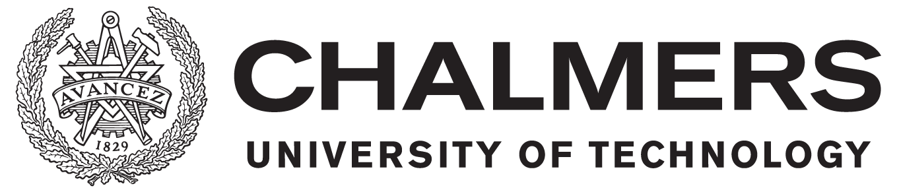
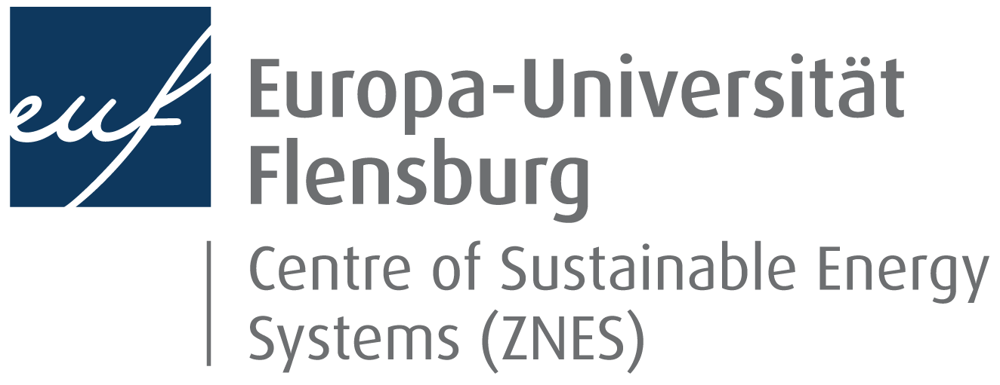

 
<p align=center>&nbsp;&nbsp;&nbsp;</p>

<p align=center>&nbsp;&nbsp;&nbsp;&nbsp;&nbsp;&nbsp;</p>

<p align=center>&nbsp;&nbsp;&nbsp;&nbsp;&nbsp;&nbsp;&nbsp;&nbsp;&nbsp;&nbsp;&nbsp;&nbsp;</p>

<p align=center><a href="https://www.gnu.org/licenses/gpl-3.0"></a>&nbsp;&nbsp;&nbsp;&nbsp;<a href="https://www.gnu.org/licenses/fdl-1.3"></a>&nbsp;&nbsp;&nbsp;&nbsp;<a href="https://creativecommons.org/licenses/by-sa/4.0/"></a>&nbsp;&nbsp;&nbsp;&nbsp;<a href="https://opendatacommons.org/licenses/odbl/"></a></p>
